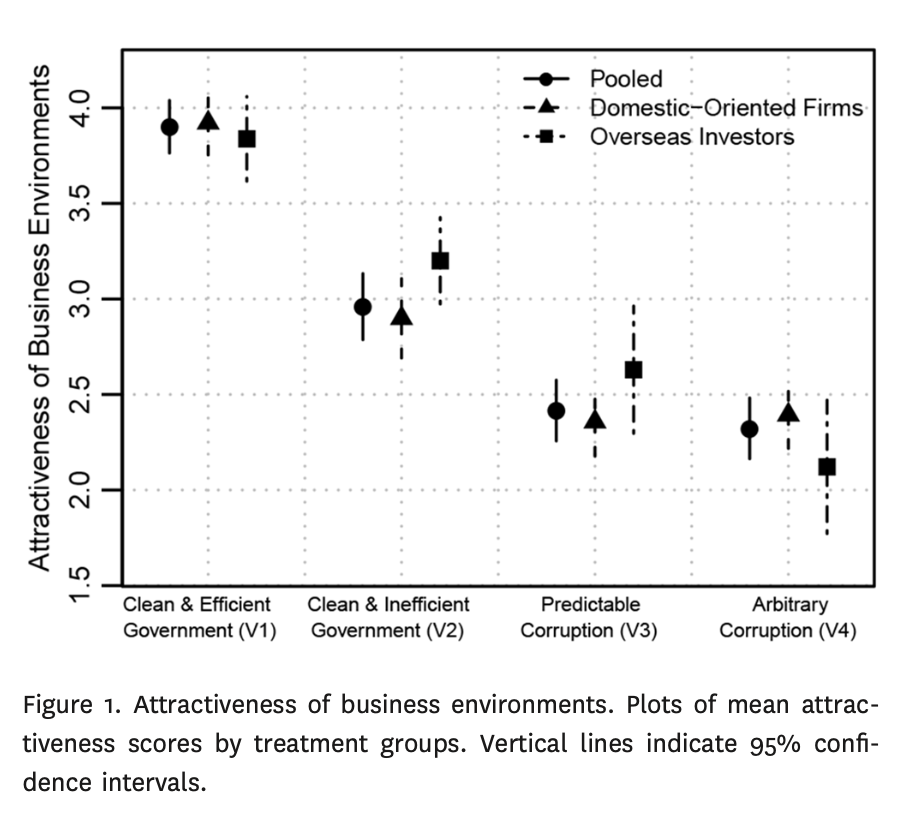
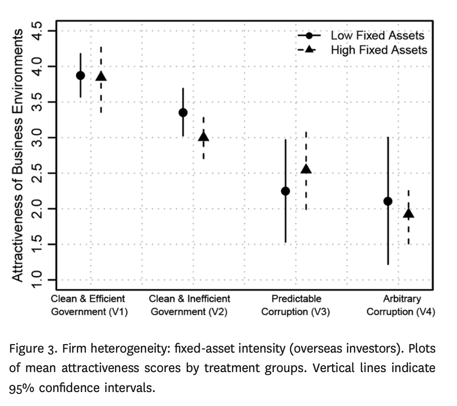
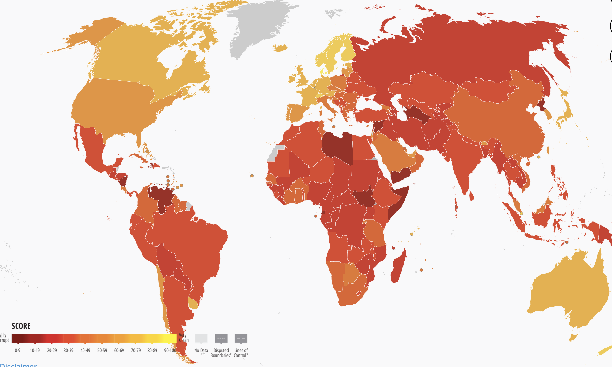
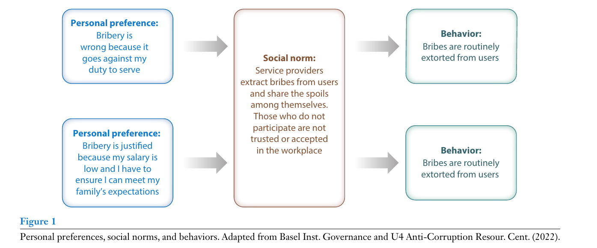

Global Business
INTL-I103 | Day 8 — The Political Economy of Corruption
September 21, 2026
Today’s Plan
Today’s Big Question
Why corruption is so persistent — and what does it take to root out?
| Section | What we’ll cover |
|---|---|
| 1 · Review | Political risk, Bargaining models, and Rice & Zegart’s risk-management framework |
| 2 · What is corruption? | Definitions, forms, and why corruption is a political risk |
| 3 · What is corruption’s function? | What the evidence says about whether corruption greases the wheels or throws sand in the gears |
| 4 · The collective-action trap | Why corruption persists — and potential solutions |
| 5 · Inside a firm | What made bribery pervasive at Siemens |
| 6 · Looking ahead | Setting up Wednesday’s Siemens analysis |
Reviewing Political Risk
Recap: what drives bargaining power?
Two things about a firm’s position key to predicting how much leverage the host government gains once the deal is signed:
how mobile its capital is, and
how much it needs the host’s own market.
(low fixed assets)
(high fixed assets)
platform market
seeking host
That’s the political bargaining model: whichever side’s power resources are scarcer or erode faster after signing tips the deal in the other’s favor.
Defining and managing political risk
Classes of political risk
- Breaches of contract — including bribery/corruption
- Adverse changes in laws, regulations, and policies
- Internal instability — violent conflict, crime, and weak court systems
- Geopolitical conflict
Rice & Zegart (2018) reduce effective political-risk management to four questions:
How much risk will the firm tolerate? — its political risk appetite.
Turn political uncertainty into political risk — something you can assign a probability to.
Raise risk-adjusted return: political risk insurance, government & community relationships, CSR.
React well when a risk becomes a real operational hit — and capitalize on the crisis.
What is corruption?
Defining corruption
- Corruption: the misuse of publicly derived power and authority for private gain
- Bribery: money or favors given to influence the acts of a public official — or anyone entrusted with power (meaning, an authority figure)
By scale
By predictability
Corruption as a political risk
Rice & Zegart list corruption among their ten types of political risk: “discriminatory taxation and systemic bribery.” It creates exposure in three distinct ways:
Bribes raise the cost of doing business, and corrupt agreements aren’t enforceable in court.
How close to the government is too close? A friendly regime can be replaced — leaving your connections, or your complicity, exposed.
Extraterritorial law (FCPA, UK Bribery Act, OECD Anti-Bribery Convention) can reach conduct that happened entirely abroad.
What is corruption’s function?
Is corruption an adaptive or maladaptive response?
“Grease the wheels”
Corruption is a workaround for a slow, rigid state — bribes are “speed money.” Huntington: the only thing worse than a dishonest bureaucracy is an honest, rigid one.
“Sand in the gears”
Corruption piles extra cost, secrecy, and uncertainty on top of weak institutions — it doesn’t fix the underlying problem, it compounds it.
Zhu & Shi (2019) separate two things that are normally tangled together in real-world data: how often officials demand bribes, and whether paying one actually guarantees the service.
Method: A vignette experiment embedded in a firm survey in China. Each executive was randomly assigned one scenario, rated how attractive that business environment was (1–5), and said how they’d invest.
reliably
is uncertain
demand bribes
demand bribes
Random assignment isolates the effect of bribery and of uncertainty — in observational data the two are almost impossible to pull apart.
Zhu, Boliang, and Weiyi Shi. 2019. “Greasing the Wheels of Commerce? Corruption and Foreign Investment.” The Journal of Politics 81 (4): 1311–1327. https://doi.org/10.1086/704326
What they found: sand in the gears

Source: Zhu & Shi (2019), Fig. 1

Source: Zhu & Shi (2019), Fig. 3
- Executives always rate corruption worse than a clean government — even a slow, inefficient one
- V3 and V4 are rated about the same. Knowing the going rate for a bribe doesn’t make it acceptable
- The one exception: fixed-asset-intensive, high-productivity overseas investors are a little more forgiving of predictable corruption — though still worse off than under clean government
Even in China — arguably corruption’s best-case setting for the “grease” story — the evidence favors sand in the gears.
Measuring corruption
Corruption is hidden by its very nature, so researchers triangulate two approaches:
- Perceptions — surveys of experts and executives (e.g., the CPI)
- Experience — did you pay a bribe, and did it work? (what Zhu & Shi just measured directly)
- Qualitative differences matter too: low-level vs. high-level, pervasive vs. arbitrary

Source: Transparency International, Corruption Perceptions Index 2023
42/100 — the 2025 CPI’s global average, its lowest in over a decade. 122 of 182 countries score below 50, and only 5 score above 80 (down from 12 a decade ago) — “corruption is worsening globally, with even established democracies experiencing rising corruption.” Source: Transparency International, Corruption Perceptions Index 2025
The collective-action trap
Corruption as a top-down principal-agent problem
A principal delegates authority to an agent to act on their behalf. The agent typically knows more about their own actions and local conditions than the principal does — an information asymmetry the agent can exploit.
citizens & officials · shareholders & managers · states & firms
acts in the principal’s interest
uses delegated power for private gain — corruption
legal exposure and reputational cost; the position itself is put at risk
private gain persists; the principal’s interests go unmet
Monitoring alone rarely solves this: the same information asymmetry that makes delegation useful is what makes diversion hard to catch. Also, sometimes leaders are happy to engage in corruption or at least willing to look the other way.
Corruption as a bottom-up collective-action problem
Model two firms (or officials) choosing whether to comply or cheat:
| Firm B complies | Firm B cheats | |
|---|---|---|
| Firm A complies | Best for society | A loses out |
| Firm A cheats | A gets ahead | Nash equilibrium |
Everyone would prefer [Comply, Comply] — but absent enforcement, [Cheat, Cheat] is each individual’s best response. Solving corruption requires solving this rational response.
The strategy that maximizes your payoff, given what you expect the other player to do.
A pair of strategies where neither player can do better by switching alone. At [Cheat, Cheat], deviating to Comply only makes things worse for you.
An outcome where no one can be made better off without making someone else worse off. [Comply, Comply] is Pareto optimal — but it isn’t the equilibrium.
Is is a collective-action problem because society is better off with the pareto optimal outcome, but is likely to get a suboptimal outcome due to individual, uncoordinated incentives.
Solving the collective-action problem: three potential levers
| Lever | How it works |
|---|---|
| Host-country institutions | Rule of law, independent courts and anti-corruption agencies, transparent procurement, whistleblower protection — raise the cost and lower the payoff of cheating at home. |
| Home-country institutions | Extraterritorial law reaches firms wherever they operate — the FCPA (US), UK Bribery Act, OECD Anti-Bribery Convention. A firm’s own government can punish bribery committed abroad. |
| Social norms | Kubbe, Baez Camargo & Scharbatke-Church (2024): formal rules only bind if they match what people actually expect everyone else to do. Where corruption is the norm, legal reform alone rarely moves behavior. |
Can you shift norms of corruption?
- Fragile / mixed: a Nigerian campaign combining a film with a free-to-reply text line spiked corruption reports 1.7× overnight — then collapsed within days. The underlying norm never actually shifted.
- More promising, still modest: a Mexican campaign informing people how widely corruption was actually condemned cut stated bribery willingness by ~7 points — but its own author calls it one tool among many, not a fix on its own.
- Most promising so far: a peer-led pilot in a Dar es Salaam hospital — staff themselves as anti-bribery “champions,” plus signage resetting perceived norms — produced real, significant drops in patients’ felt need to bribe.
Bottom line (Kubbe et al. 2024): reforms that ignore social norms are, at best, short-lived — and can backfire. Can this be applied to strategic management?
Inside a firm: Siemens
What made corruption pervasive at Siemens?
- Weak leadership and an enabling “tone at the top”
- Limited compliance enforcement resources
- A changing legal environment (FCPA, the OECD Anti-Bribery Convention, German law)
- Global reach across many jurisdictions and norms
- Intense competitive pressure to win contracts
Key takeaways
- Corruption is the misuse of public power for private gain and represents a political risk for MNEs that need to opperate in environments with weak institutional constraints on such behavior
- The evidence favors the view that corruption is maladaptive - sand in the gears, rather than a method of greasing the wheels. Even predictable corruption is rated worse than a clean but slow government
- Corruption persists because the individually rational move (Nash equilibrium) isn’t the collectively best one (Pareto optimal) — and no single lever (law at home, law abroad, or norms) reliably closes that gap alone
Looking ahead
Wednesday (Day 9): Fighting Corruption at Siemens. Your team will work through the course’s assess → diagnose → propose framework on a real case:
- Assess: how big was it, and how did bribery get embedded in Siemens’s culture and operations?
- Diagnose: use today’s tools — weak host and home institutions, competitive pressure, and the norms inside the firm itself — to explain why
- Propose: what made Siemens’s reform credible, and was it law, reputation, or something else that actually drove the change?
Questions?
See you Wednesday.

INTL-I103 | Global Business
Social norms of reciprocity and obligation

Source: Kubbe, Baez-Camargo & Scharbatke-Church (2024), Fig. 1
Baez-Camargo et al. (2020) study petty corruption across Rwanda, Tanzania, and Uganda and find two social norms doing most of the work: reciprocity and obligation to the group.
A gift or favor creates an unwritten obligation to reciprocate. A bribe is rarely a one-off — it’s a social investment that builds a relationship, which is exactly why it’s so hard to refuse: Tanzanian health workers who reject bribes report users getting upset, shouting, and calling them unhelpful.
Families invest in putting a member through medical school, expecting to be provided for later. When the resulting public-sector salary can’t meet those expectations, the official is pressured to extract rents on the family’s behalf — and risks being shunned by kin if they refuse.
The uncomfortable finding: these are pro-social norms — trust, reciprocity, solidarity — not their absence. Rosenbaum et al. (2013) show prosocial norms facilitate, rather than mitigate, petty corruption wherever formal, legal enforcement is weak.